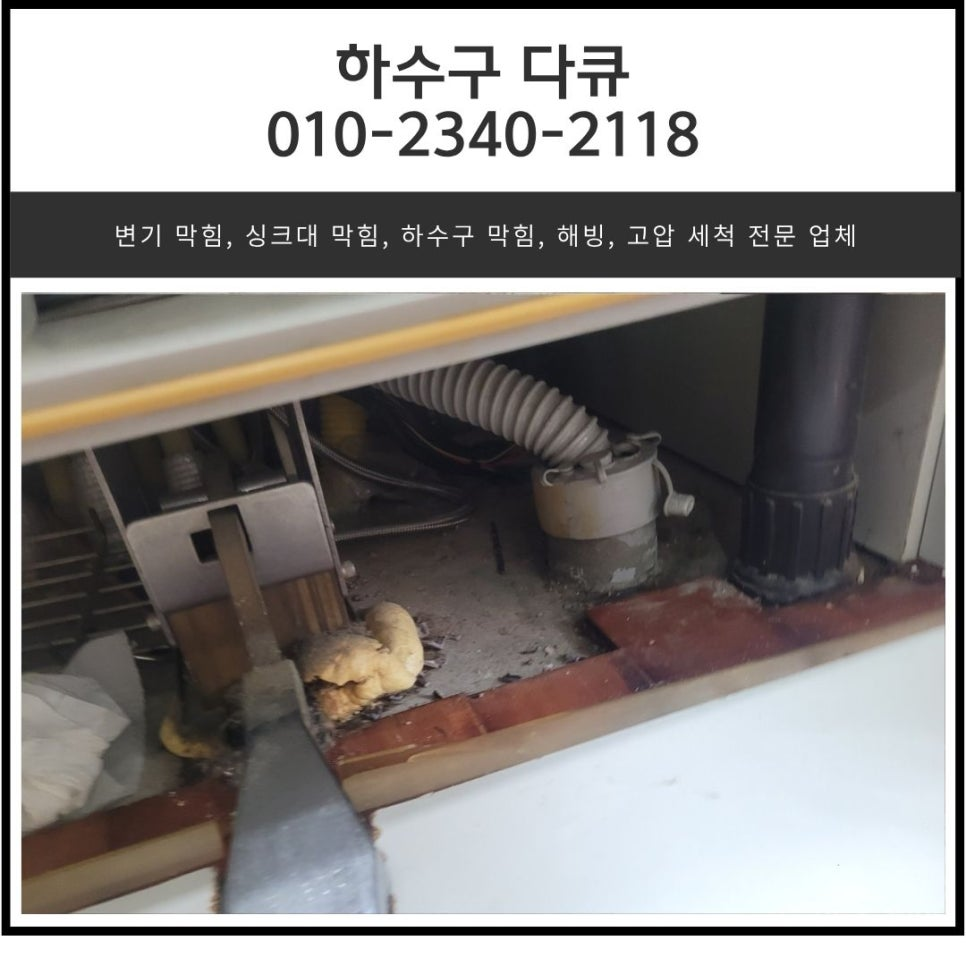
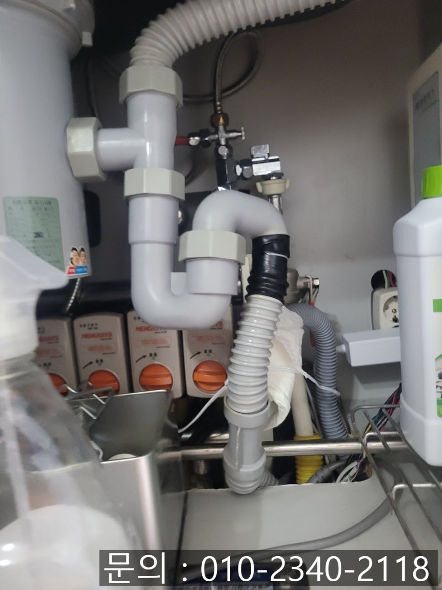
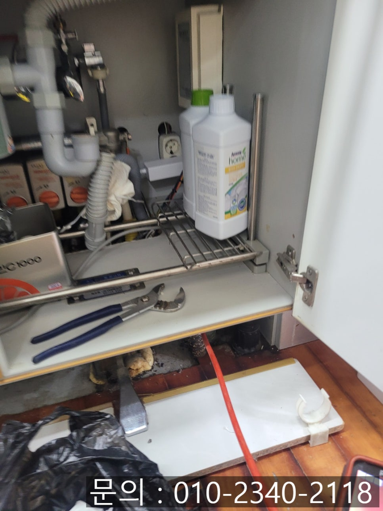
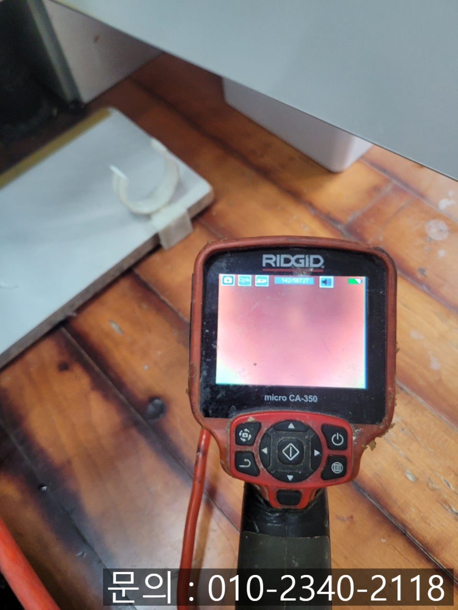
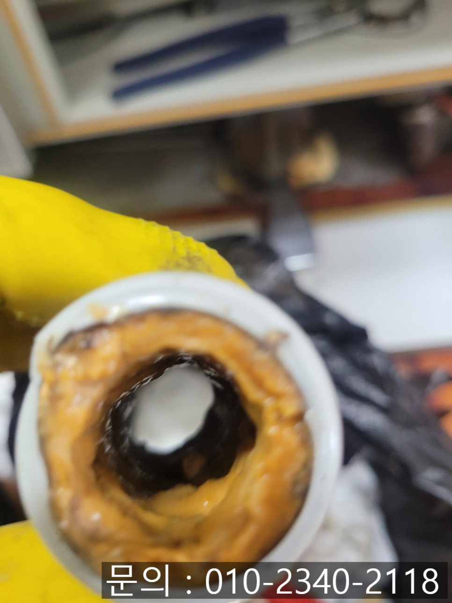
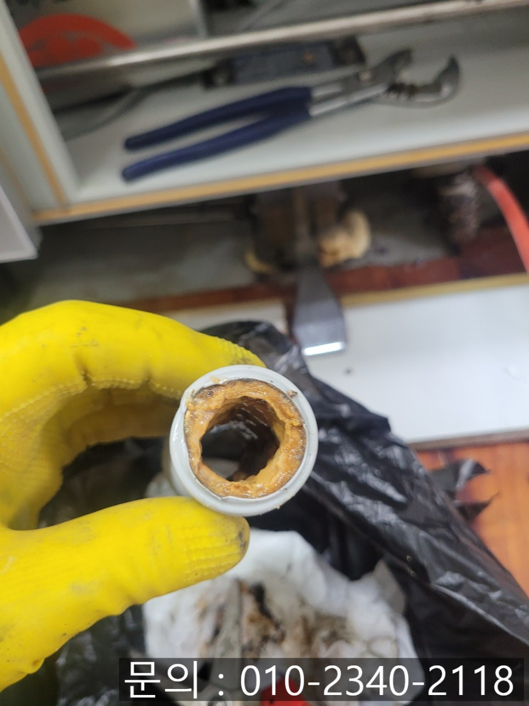
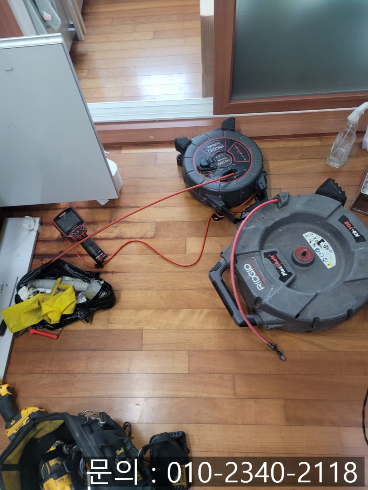

🏠 마북동 싱크대 막힘 용인 보정동 아파트 하수구 역류 물 넘침 뚫는 방법
용인 보정동 싱크대막힘 전문 시공 후기

📋 작업 개요
- 위치: 용인 보정동, 보정동, 용인
- 서비스 유형: 싱크대막힘, 하수구막힘, 배관막힘, 누수수리, 역류해결, 뚫는업체, 배관청소
- 작업 일시: 2025. 7. 1. 21:56
- 업체명: 하수구수사대 (010-5615-2118)
🔍 문제 상황
안녕하세요.
마북동 싱크대 막힘, 용인 보정동 아파트 하수구 역류 물 넘침 뚫는 방법을 소개해 드릴 하수구 다큐입니다.
가정에서 주방은 하루에도 수십 번 이용되는 공간입니다.
그중에서도 싱크대의 경우 음식물을 손질하고, 그릇을 닦기도 하는 등 물을 가장 많이 쓰는 곳이에요.
그런데 어느 날 평소와 다름없이 물을 틀었는데, 배수구에서 물이 역류해 넘쳐흐른다면?
외부로 역류한 물은 걸레로 닦으면 괜찮겠지 하시겠지만 마북동 싱크대 막힘으로 역류가 발생했다는 것은 배관 내부에 문제가 발생한 것으로 정확한 원인을 찾아 문제를 해결하시는 게 좋습니다.
오늘 소개해 드릴 마북동 싱크대 막힘 현장의 경우 다른 현장과 마찬가지로 싱크대에서 사용한 물이 잘 내려가지 않아 연락을 주셨는데요.
연락을 받고 현장으로 달려가 점검을 시작해 보니 주름 배관에 검정 테이프를 붙여놓으신 상태였습니다.

🔎 원인 분석
💡 전문가 진단: 정밀 진단 장비를 사용하여 슬러지의 고착 여부를 판명하고 타격/세척 작업을 실시했습니다.
얼마 전부터 주방에서 냄새가 나는 것 같아 붙여놓으셨다고 하셨는데요.
이번 현장은 악취가 문제가 아니었습니다.
사진으로도 확인할 수 있듯이 싱크대 앞 마룻 바닥을 자세히 보시면 물이 스며들어 마루 사이사이의 색상이 진해진 것을 확인할 수 있죠.
싱크대에서 사용한 물을 배관에서 소화해 내지 못하고 조금씩 역류한 것이 마루로 스며들었을 경우 그대로 방치하게 되면 아래층 누수로 이어질 수 있어요.
용인 보정동 아파트 하수구 역류, 물 넘침 뚫는 방법으로 첫 번째는 정확한 원인 파악이 중요합니다.
막힘의 원인을 알아야 그에 맞는 장비를 이용해 해결할 수 있기 때문인데요.
배관 전용 내시경 카메라가 배관 내부로 진입하자 기름 슬러지로 인해 붉게만 보이는 것을 확인할 수 있었습니다.
싱크볼과 배관 사이를 연결해 주는 주름 배관도 확인해 보니 누런 기름 슬러지로 인해 물길이 많이 좁아진 상태였어요.
고객님께서도 직접 눈으로 확인하시더니 이 정도로 심각할 줄 몰랐다고 깜짝 놀라시며 배관 청소를 요청하셨습니다.

🔧 작업 과정
용인 보정동 아파트 하수구 역류가 왜 발생했을까요?
대부분 싱크대에서 내려보낸 음식 찌꺼기, 기름, 세제 찌꺼기 등이 배관을 통해 지나가면서 조금씩 쌓이면서 물길이 막히게 됩니다.
싱크대에서 물을 사용하면 배관을 통해 내려가야 하는 물이 막힌 부분을 만나 흘러갈 수 없으니 다시 싱크대로 역류하게 되는 것이죠.
얇은 노즐로 어떤 배관이던 진입이 용이한 플렉스 샤프트 장비를 이용해 배관 청소를 진행하기로 했습니다.
노즐 끝에 달린 체인이 배관 내부에서 강한 힘으로 회전하면서 이물질을 제거하는 역할을 하는데요.
조금씩 통수가 되며 물이 빠지긴 했지만 시원하게 흘러가지 않는 상태였어요.
내시경으로 점검해 보니 아직 검정 비닐 같은 이물질이 막고 있는 상태였습니다.
노즐 끝에 달려있는 단단한 체인이 배관에 쌓인 이물질을 파쇄해 주기도 하지만 비닐처럼 부서지지 않는 이물질은 체인에 걸어 제거하는 작업을 진행하게 되는데요.
여러 차례 반복해서 작업을 진행하자 배관을 막고 있던 이물질을 모두 제거할 수 있었습니다.
처음 배관 내부를 촬영했을 때와는 완전히 다른 모습이죠?
배관 청소를 모두 마친 다음 내시경으로 남아있는 이물질은 없는지 꼼꼼하게 확인하고 주름 호스를 새것으로 교체해 드린 다음 많은 양의 물을 흘려보내면서 테스트도 진행해 드렸습니다.
많은 양의 물도 시원하게 소화시키는 것을 확인하고 작업을 마무리할 수 있었어요.
혹시 지금 싱크대 앞 마룻 바닥의 색이 변하진 않으셨나요?


✅ 작업 완료
주방 근처에 가면 평소와 다른 냄새로 불편하지 않으신가요?
싱크대 막힘으로 신호를 보내고 있을지 모릅니다.
하수구 전문가 하수구 다큐와 함께 확인해 보세요.
경기도 용인시 수지구 풍덕천로129번길 9 5층 590호




⚠️ 베란다 누수 및 방수 관리 방법
- ✅ 비가 많이 올 때 창틀 주변이나 아래층 천장에 얼룩이 생기는지 정기적으로 확인해 보세요.
- ✅ 우수관 주변 실리콘 마감이 들뜨거나 깨진 틈새가 있는지 손상 여부를 수시로 체크하세요.
- ✅ 베란다 바닥 타일의 줄눈(메지)이 소실되면 그 틈으로 물이 침투하여 누수가 유발됩니다.
- ✅ 누수 의심 증상 발견 시 방치하면 아래층 손실이 커지므로 즉시 전문가의 진단을 받으십시오.
💡 핵심 정리
- 확실한 장비 작업(내시경 점검 및 샤프트 스케일링)으로 원인을 뿌리 뽑습니다.
- 작업 후 1년 이내에 동일한 부위 재발 시 100% 무상 A/S 서비스를 보장합니다.
- 서울 · 경기 · 인천 전 지역에 24시간 언제든 긴급 출동할 수 있도록 항시 대기 중입니다.
❓ 자주 묻는 질문 (FAQ)
🚨 용인 보정동 싱크대막힘 문제로 고민이신가요?
정확한 원인 진단과 확실한 시공으로 재발 없는 해결을 약속드립니다.
24시간 긴급 출동 | 서울 · 경기 · 인천 전지역 | 1년 내 재발 시 무상 A/S